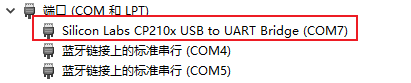
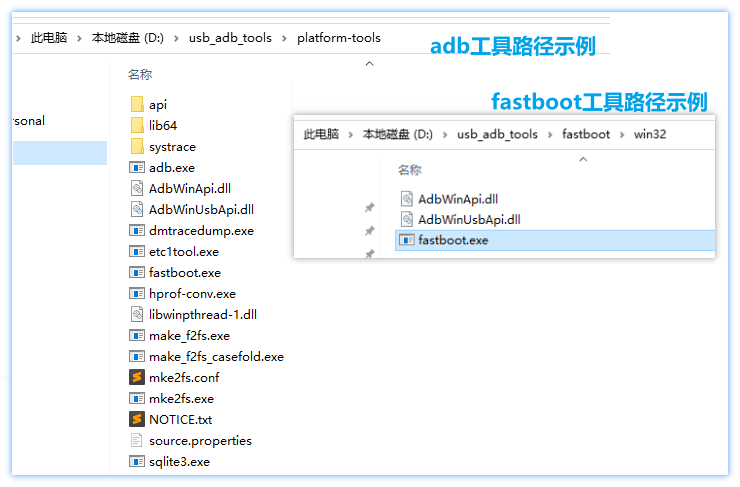

2.2. 开发板登录方法
开发板默认搭载Linaro Linux系统，HDMI接口不支持图形界面显示，用户需要通过命令行方式与开发板进行交互。目前X3开发板支持串口、网口、USB三种命令行登录方式，下面将逐一介绍。需要注意，开发板根文件系统默认为只读模式，操作前需要重新挂载为读写模式，命令如下：
mount -o remount,rw /
2.2.1. 串口登录
串口作为开发板的基础调试接口，可应用于镜像升级、环境配置及功能调试等多个场景中。对于开发板串口和PC机的硬件连接方法，请参考2.1.3章节。
2.2.1.1. PC安装串口驱动
当串口USB转接板首次插入PC时，可能需要安装设备驱动。此时可通过查看设备管理界面，确认COM端口显示是否正常，如果提示有未知USB设置，则需要安装设备驱动。
串口USB转换芯片，一般有CP210X(套件自带)、PL2302、CH340这几种类型，用户可根据型号安装交付包 “Software_tools/USB_Serial_drivers” 目录下对应驱动，安装完毕后设备识别正常，如下图：

2.2.1.2. 终端控制软件
PC上常用的调试工具有Putty、SecureCRT、MobaXterm等，用户可根据自身使用习惯来选择。不同工具的端口配置流程基本类似，本文以SecureCRT为例，介绍新建串口连接过程。工具端口配置参数如下：
波特率（Baud rate）：921600
数据位（Data bits）：8
奇偶校验（Parity）：None
停止位（Stop bits）：1
流控（Flow Control）：无
点击Quick Connect按钮，打开创建窗口
在Quick Connect对话框中，选择Protocol为 Serial，选择Port到对应的COM口，例如COM7， 然后按照上文的参数进行配置
点击Quick Connect对话框的Connect按钮完成连接
输入用户名root即可登录设备
2.2.2. 网口调试
开发板支持一路千兆以太网口，因此用户可通过网络远程登录设备，实现功能调试。开发板默认支持Telnet、SSH2两种通信协议。
对于网络接入方式，有PC直连、局域网接入两种选择。由于开发板默认不支持DHCP功能，因此对于局域网接入场景，用户需要确认网络是否可以支持静态ip配置。为避免网络环境造成的额外干扰，本文推荐用户优先使用PC直连方式。
2.2.2.1. 网络配置
为保证正常的网络通信，用户需要确认开发板、PC机网络配置可以满足如下要求：
两者的IP地址前三段相同，例如开发板：192.168.1.10、PC机：192.168.1.11
两者的子网掩码、网关保持一致
PC机网络防火墙处于关闭状态
如用户需要确认开发板网络配置状态，可以使用串口登录设备，然后通过ifconfig命令查询，开发板默认的网络配置如下：
IP地址：192.168.1.10
掩码：255.255.255.0
网关：192.168.1.1
确认开发板网络配置后，可按照本章节开头的网络配置要求对PC的网络进行参数配置，配置步骤为：
在网络连接中找到对应的以太网设备并双击打开。
找到Internet协议版本4选项并双击打开。
在下图红框位置填入对应的网络参数，然后点击确定。
网络配置完成后，需要确认开发板、PC机是否可以双向ping通，如ping不通需要按照网络配置要求检测配置过程是否有误。
2.2.2.2. 终端软件配置
PC上常用的调试工具有Putty、SecureCRT、MobaXterm等，用户可根据自身使用习惯来选择。不同工具的端口配置流程基本类似，本文以SecureCRT为例，介绍新建网络连接过程。
点击 Quick Connect 按钮，选择Protocol为Telnet or SSH2
填写hostname为开发板IP地址, SSH2方式需要额外填写Username为root
其他配置保持默认并点击Connect按钮完成创建
创建连接，并输入用户名root完成登录
2.2.3. USB口调试
开发板提供一路Micro USB 2.0，其模式固定为USB Device，可用于adb、fastboot、UVC、RNDIS等多种USB应用场景。需要注意的是，使用Micro USB接口时，禁止在USB Type A口上插入任何设备，否则会造成功能异常。接口位置如下图所示：
2.2.3.1. 安装 adb 和 fastboot 命令
fastboot命令工具包：Software_tools/USB_adb_drivers/fastboot.tar.gz
adb命令工具包：Software_tools/USB_adb_drivers/platform-tools_r30.0.5-windows.zip
选择一个不带 空格、中文、特殊字符 的文件夹解压以上两个工具包，例如解压到 D:/usb_adb_tools

打开windows系统的高级环境配置，把这两个工具包的路径添加到环境变量中。
2.2.3.2. USB 驱动安装
在使用到fastboot功能前，比如使用fastboot升级固件，在终端程序上执行fastboot命令，需要确认PC是否安装了fastboot驱动。
你可在开发板控制台中输入reboot fastboot，设备会自动重启并进入fastboot模式，串口log如下：
如未安装驱动，设备管理器会提示未知设备，如下图：
此时，用户需要首先安装交付包提供的fastboot驱动程序，PC机才能正常识别fastboot端口，驱动程序路径Software_tools/USB_adb_drivers/android_hobot_winusb.zip。驱动安装步骤如下：
解压 android_hobot_winusb.zip ，以管理员身份运行 5-runasadmin_register-CA-cer.cmd 完成驱动程序的注册
右键点击设备管理器中带问号的 USB download gadget，并选择解压出的驱动文件夹andriod_hobot，然后点击下一步，完成驱动安装
驱动安装完成后，设备管理器会显示fastboot设备Android Device，如下图：
2.2.3.3. ADB
开发板启动后会自动加载adbd服务，方便用户使用adb进行调试。将开发板Micro USB接入PC后，设备管理器会识别到开发板adb端口xj3，如下图：
除了查看设备管理器端口，用户也可以通过adb devices命令确认PC机是否识别到adb设备，正常识别状态如下图：
如未识别到adb设备，通常有两种可能性：1. 用户使用的Micro USB数据线不支持数据通信；2. 开发板未启动adbd服务。用户可按如下步骤进行排查：
通过ps | grep adbd命令，确认adbd进程是否启动。
如果adbd进程未启动，使用命令service adbd start启动服务，启动log如下：
如果adbd进程启动后PC机仍无法识别adb端口，则用户需要自行确认Micro USB数据线是否存在异常
2.2.3.4. fastboot
进入fastboot有两种方式：
uboot中敲fastboot 0
Linux shell中敲reboot fastboot
fastboot功能一般用来给开发板做固件升级：
最简便的是在PC的命令行程序使用如下命令:
fastboot flash 0x0 disk.img # 整体镜像烧录
烧录完后可以用fastboot reboot命令重启系统
其余也可按传统的分区方式进行烧录。
如:
fastboot flash uboot uboot.img # 烧录uboot分区
fastboot flash boot boot.img # 烧录boot分区
fastboot flash system system.img # 烧录system分区